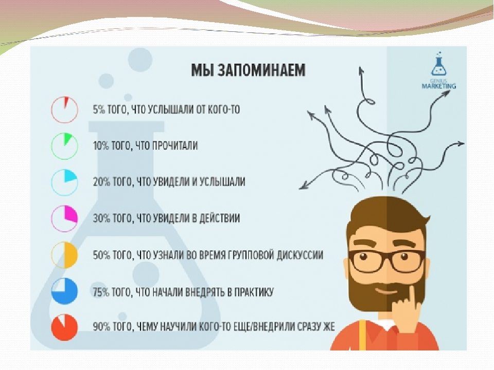
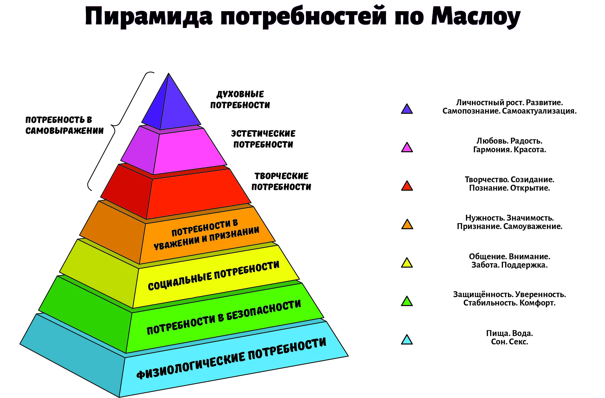
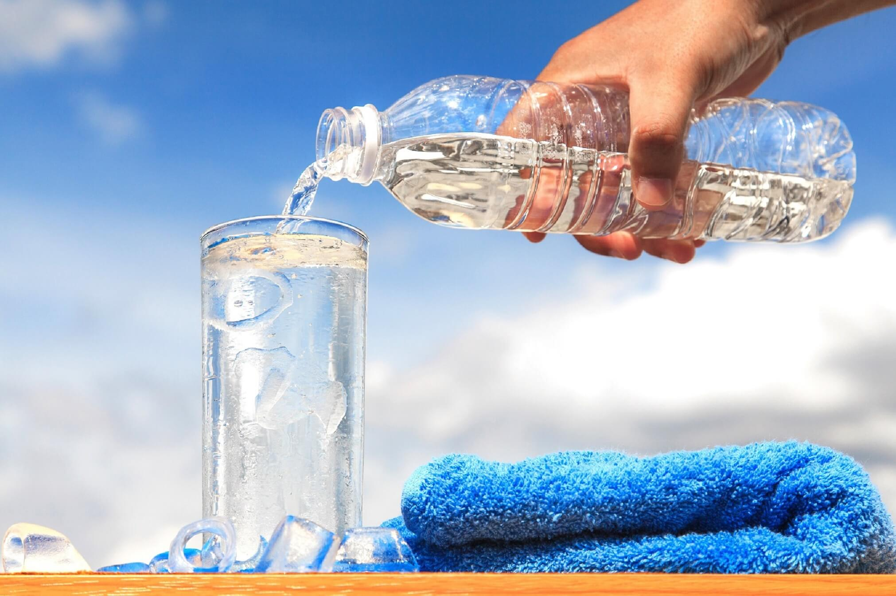

Мудрые советы и секретов, которые изменят вашу жизнь
1. Запоминайте что-то новое каждый день
Вы не только будете поддерживать свой мозг в форме, и улучшите память, но также пополните свой багаж большой библиотекой знаний, включая стихи, философские высказывания и цитаты.
2. Постепенно старайтесь снижать уровень привязанности к материальным вещам
Люди, обремененные материальными желаниями, чаще страдают, когда что-то теряют или у них это отбирают (имеется ввиду что-то материальное).
Имущество начинает овладевать вами, а не наоборот. Старайтесь стать человеком с минимальными потребностями, и вы будете намного счастливее.
3. Пейте больше воды
Поддрежание нормального уровня жидкости чрезвычайно важна для здоровья в целом. У сладких газированных напитков НУЛЕВАЯ питательная ценность; это все равно, что насыпать в чашку сахар и разбавить его сиропом.
4.Постарайтесь понять какие у вас цели и мечты
Поймите, из чего состоит ваша идеальная жизнь, и постепенно начните делать шаги, чтобы достичь этой цели. Самая приятная вещь на свете – это преодоление трудностей и достижение цели. Мы счастливее всего, когда растем и работаем над чем-то, что сделает нас лучше.